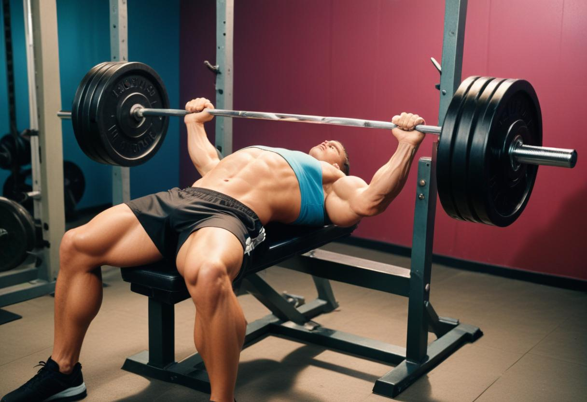

Bench Press 1RM Calculator
The Most Accurate Bench Press Calculator.
Formulas Used:
- Brzycki: 1RM = w1.0278 - 0.0278 × r
- Epley: 1RM = w × (1 + 0.0333 × r)
- Lander: 1RM = 100 × w101.3 - 2.67123 × r
- Lombardi: 1RM = w × r0.1
- O'Conner: 1RM = w × (1 + 0.025 × r)
- Mayhew et al.: 1RM = 100 × w52.2 + 41.9 × e-0.055 × r
- Wathen: 1RM = 100 × w48.8 + 53.8 × e-0.075 × r
Where:
- 1RM = One Repetition Maximum
- w = Weight lifted (kg)
- r = Number of repetitions
- e = Euler's number (approximately 2.71828)
💪 What is Bench Press?
The bench press is a compound weight training exercise where the lifter lies on a bench and pushes a weight upwards with their arms.
The bench press is one of the most popular and effective exercises for developing upper body strength. It primarily targets the following muscle groups:
- Pectoralis Major (Chest): The main muscle worked during the bench press.
- Anterior Deltoids (Front Shoulders): Assist in pushing the weight upward.
- Triceps Brachii (Back of the Arms): Help extend the elbows during the pressing motion.
Additionally, the bench press engages stabilizing muscles such as the biceps, lats, and core to maintain proper form throughout the movement.
🏆 Bench Press Standards
Male Bench Press Standards (in kg)
| Body Weight | Beginner | Novice | Intermediate | Advanced | Elite |
|---|---|---|---|---|---|
| 60kg | 45 | 65 | 85 | 110 | 140 |
| 75kg | 55 | 75 | 100 | 130 | 165 |
| 90kg | 65 | 85 | 115 | 145 | 185 |
| 100kg+ | 70 | 95 | 125 | 160 | 200 |
Female Bench Press Standards (in kg)
| Body Weight | Beginner | Novice | Intermediate | Advanced | Elite |
|---|---|---|---|---|---|
| 50kg | 20 | 30 | 40 | 55 | 70 |
| 60kg | 25 | 35 | 45 | 60 | 80 |
| 70kg | 30 | 40 | 55 | 70 | 90 |
| 80kg+ | 35 | 45 | 60 | 80 | 100 |
❓ What do these standards mean?
These standards represent the maximum weight you can lift for one repetition (1RM) in each body weight category. They help determine your bench press strength level:
- Beginner: Stronger than 10% of lifters in your weight class. A beginner is someone who has recently started lifting weights and is still learning the basics.
- Novice: Stronger than 25% of lifters in your weight class. A novice has been lifting weights for a few months and is familiar with the fundamentals.
- Intermediate: Stronger than 50% of lifters in your weight class. An intermediate lifter has been training consistently for a few years.
- Advanced: Stronger than 75% of lifters in your weight class. An advanced lifter has been dedicated to strength training for over five years.
- Elite: Stronger than 90% of lifters in your weight class. An elite lifter has been training at a high level for at least eight years.
📈 How Does the 1RM Calculator Work?
The One-Rep Max (1RM) calculator estimates the maximum weight you can lift for a single repetition based on the weight you can lift for multiple repetitions. Here's how it works:
- Input: You provide the weight lifted and the number of repetitions performed.
- Formulas: The calculator uses several established formulas (e.g., Brzycki, Epley, Lander) to estimate your 1RM.
- Calculation: Each formula calculates an estimated 1RM based on your input.
- Average: The calculator then takes an average of these estimates for a more accurate prediction.
- Output: The final result is displayed as your estimated 1RM.
This method provides a safe way to estimate your maximum strength without the risks associated with attempting a true one-rep max lift.
Note: The accuracy of the prediction decreases as the number of repetitions increases. For best results, use a weight you can lift for 2-6 repetitions.